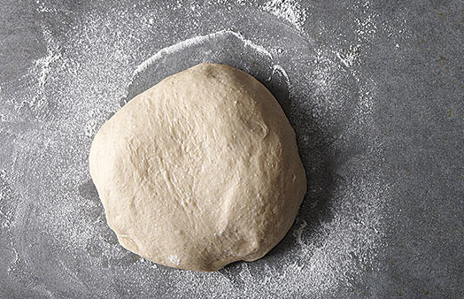
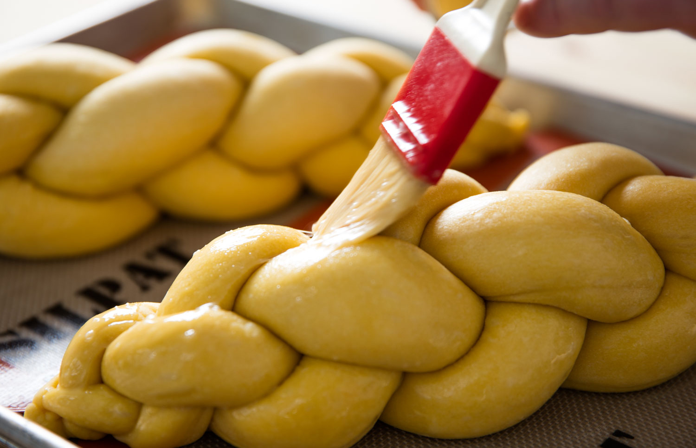
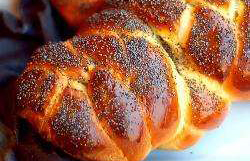
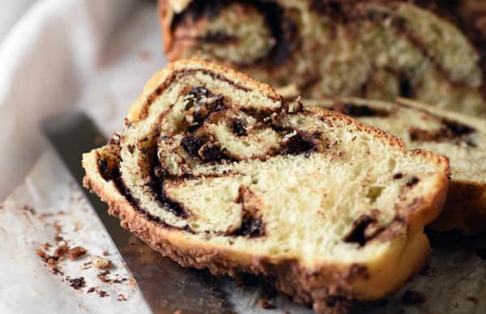

This is a recipe for traditional egg bread made for the Jewish Sabbath. This recipe is easy to make for beginner bread makers and is a tasty bread loved by everyone. It can also be adapted for Rosh Hashanah.
Ingridients
2 ½ cups warm water (110°F / 45°C)
1 tablespoon active dry yeast
½ cup honey
4 tablespoons vegetable oil
3 eggs
1 tablespoon salt
8 cups unbleached all-purpose flour
Steps
1
In a large bowl, sprinkle yeast over barely warm water. Beat in honey, oil, 2 eggs, and salt.
Add the flour one cup at a time, beating after each addition, graduating to kneading with hands as dough thickens.
Knead until smooth and elastic and no longer sticky, adding flour as needed. Cover with a damp clean cloth and let rise for 1 ½ hours or until dough has doubled in bulk.
2
Punch down the risen dough and turn out onto floured board. Divide in half and knead each half for five minutes or so, adding flour as needed to keep from getting sticky.

3
Divide each half into thirds and roll into long snake about 1½ inches in diameter. Pinch the ends of the three snakes together firmly and braid from middle. Either leave as braid or form into a round braided loaf by bringing ends together, curving braid into a circle, pinch ends together.
4
Grease two baking trays and place finished braid or round on each. Cover with towel and let rise about one hour.
5
Preheat oven to 375°F (190°C).
6
Beat the remaining egg and brush a generous amount over each braid.

7
Bake at 375°F (190°C) for about 40 minutes. Bread should have a nice hollow sound when thumped on the bottom. Cool on a rack for at least one hour before slicing.
Variations
Poppy Seed Challah
After
STEP 1
consider sprinkling the bread with poppy seeds.

Chocolate Challah
Chocolate filling:
4 tbsp cocoa powder
2 tbsp sugar
¼ cup milk to dissolve cocoa powder
Instead of
STEP 3
mix together the chocolate filling. Divide each half into thirds and roll into a rectangles. Add the chocolate filling all the way to the sides of the dough on the right and left then roll up the dough into snakesabout 1½ inches in diameter. Pinch the ends of the three snakes together firmly and braid.

Braids
Also consider trying out different braids or curving the braid in a circle.
Recipe Project by Lucy Chen Interaction Design | iffall2019
.jpg)
.jpg)